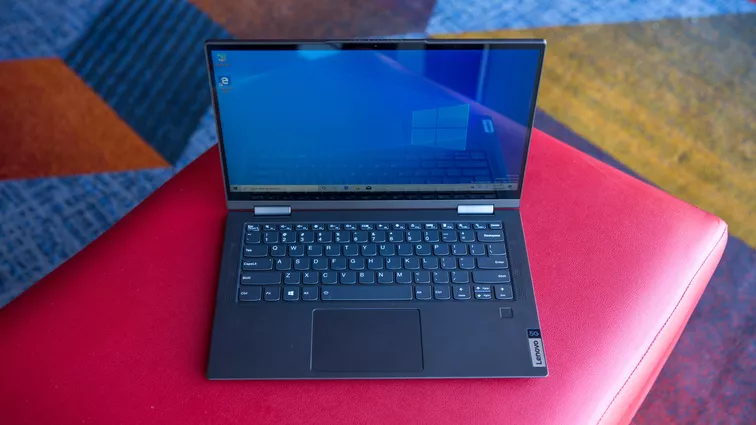

Yoga 5G de Lenovo
En el CES, Samsung confirmó que su Galaxy Book S, que cuenta con acceso móvil a Internet y corre en la plataforma Snapdragon 8cx de Qualcomm, llegará al mercado antes de marzo. Sin embargo, la Yoga 5G de Lenovo será la primera en contar con la versión 5G del chip si su lanzamiento se produce, como está previsto, en la primavera boreal, a un precio desde US$1,499. Será conocida como Flex 5G en los Estados Unidos.
Lenovo dice que la Yoga 5G tendrá hasta 24 horas de duración de la batería, lo que, combinado con su peso de 2.9 libras (1.3 kg) y su brillante pantalla de 400 nits, debería hacer de esta dos en uno de 14 pulgadas una excelente máquina de trabajo para jornadas completas. Además, admite redes de banda completa de onda milimétrica y sub-6GHz 5G, lo cual es bueno, porque no todas las redes funcionan igual. Lee más sobre la Yoga 5G de Lenovo.

|